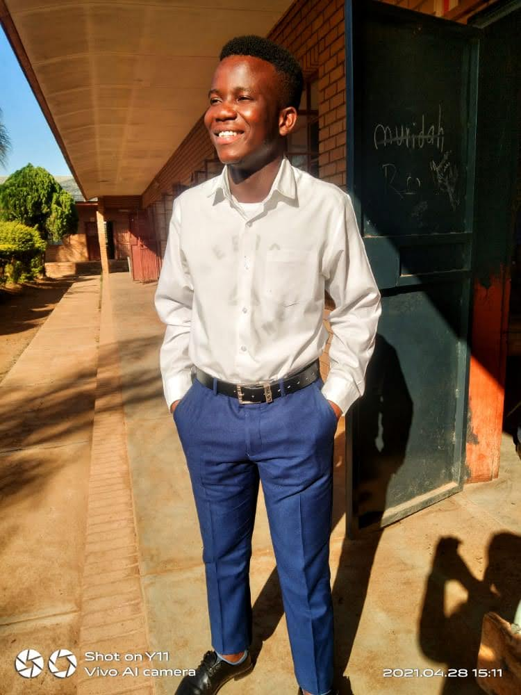

Success Stories
The inspiring journey of Khaphathe Mpho.

Matric Year — Kolokoshani Combined School
Graduation — Tshwane University of Technology
Featured Success Story
Khaphathe Mpho joined the Ntodeni Nenungwi Foundation programmes in 2021 while completing his matric at Kolokoshani Combined School.
Through discipline, commitment and hard work, he passed matric with Bachelor admission and went on to study Computer Science at Tshwane University of Technology.
In May 2025, he started his internship at ZTE, gaining valuable experience in the technology and telecommunications environment.
In April 2026, he graduated from Tshwane University of Technology in record time. In May 2026, he started a new position at ZTE, continuing to grow professionally.
Mpho is now registered with Vaal University of Technology for the 2027 academic year, showing his commitment to lifelong learning and growth.
Matric at Kolokoshani Combined School
Started Computer Science at TUT
Started internship at ZTE
Graduated from TUT
Started new position at ZTE
“Your background does not limit your future. With discipline, education, mentorship and consistency, you can rise beyond your circumstances.
Start where you are, use what you have, believe in your journey and keep moving forward. The next success story could be yours.”